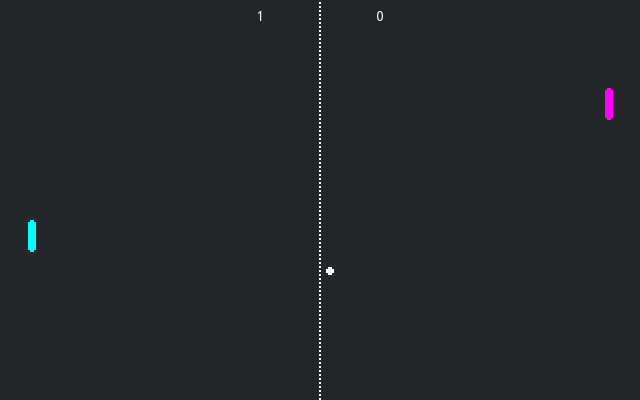
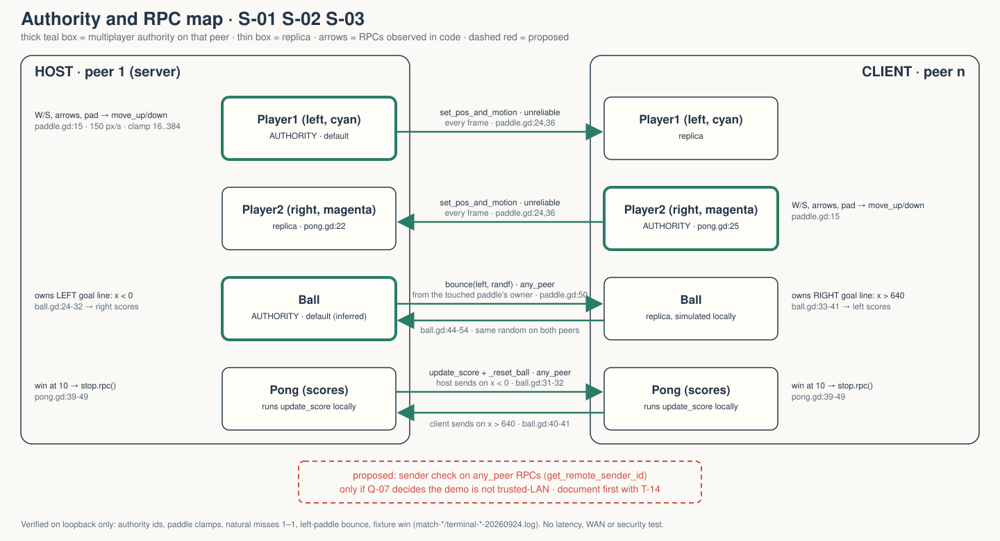
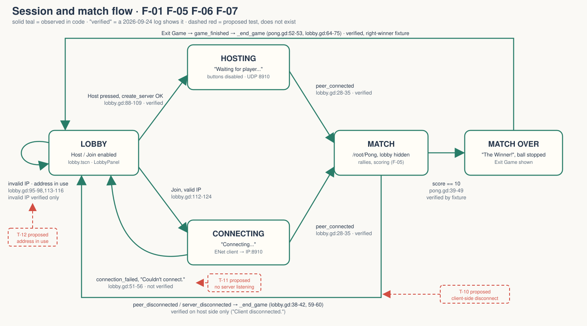

The official Godot two-peer Pong sample, copied into Walker with a title change and one loopback flag. It demonstrates who owns what on the wire. It is not a game design, and nothing here approves one.
OBSERVED in code or logs PROPOSED does not exist MISSING nobody has decided
No gate is signed. Zero human playtests. Arrow keys or space to advance. Argument lives in GDD.md; slides carry the claim.

OBSERVED godot/screenshots/pong_multiplayer.png, 640×400. Upstream's image, not a Walker capture. Walker's capture and both films are pending under a shared capture blocker (README.md:11).
Fair under lag. Also means each peer can award points unchecked.


Solid = code path. "verified" = a 2026-09-24 log shows it. Dashed red = proposed tests T-10..T-12 for the three unlogged exits.
| ID | Feature | Priority |
|---|---|---|
| F-01 | Host / join over ENet | CORE |
| F-02 | Paddle authority split | CORE |
| F-03 | Paddle input + replication | CORE |
| F-04 | Local ball + synced bounce | CORE |
| F-05 | Split goal-line scoring | CORE |
| F-06..F-08 | Win/exit · disconnect · loopback flag | SHOULD |
| F-09..F-10 | "You" label · public-IP link | NICE |
Over the 40% line. The demo is its core; nothing can go without losing the point. Priorities are inferred, the cut-or-extend call is MISSING Q-06.
| Log | Shows | Result |
|---|---|---|
| lobby-fixed | invalid join rejected, loopback host waiting | 5 PASS |
| match-host / -client | authority, W/S to clamps, natural misses 1–1, host sees disconnect | 9 / 7 PASS |
| terminal-host / -client | left-paddle bounce, win via a score-9 fixture, Exit restores lobby | 7 / 7 PASS |
| lobby (first) | harness targeted the wrong node | test bug, fixed in test |
Not verified: right-paddle bounce, left winner, a natural ten-point match, client-side "Server disconnected.", "Couldn't connect.", "address in use", latency, WAN, security, rendered footage.
any_peer with no sender check. MISSING Q-07 trust model.update_score.rpc directly. It documents R-01; it does not fix it.| # | Question |
|---|---|
| Q-01 · Q-02 | Why Walker keeps this demo · who the "player" is |
| Q-03 · Q-04 | Pillars · PX goals |
| Q-05 · Q-06 | Faithful copy or extend · CORE 50% cut or extend |
| Q-07 · Q-08 | Trust model for any_peer RPCs · acceptable ball drift |
| Q-09 · Q-10 | Are upstream tuning numbers Walker's design · what evidence closes the item |
| Q-11 · Q-12 | Keep the icanhazip.com link · track or freeze upstream |
Owner of every row: Nik Bear Brown.